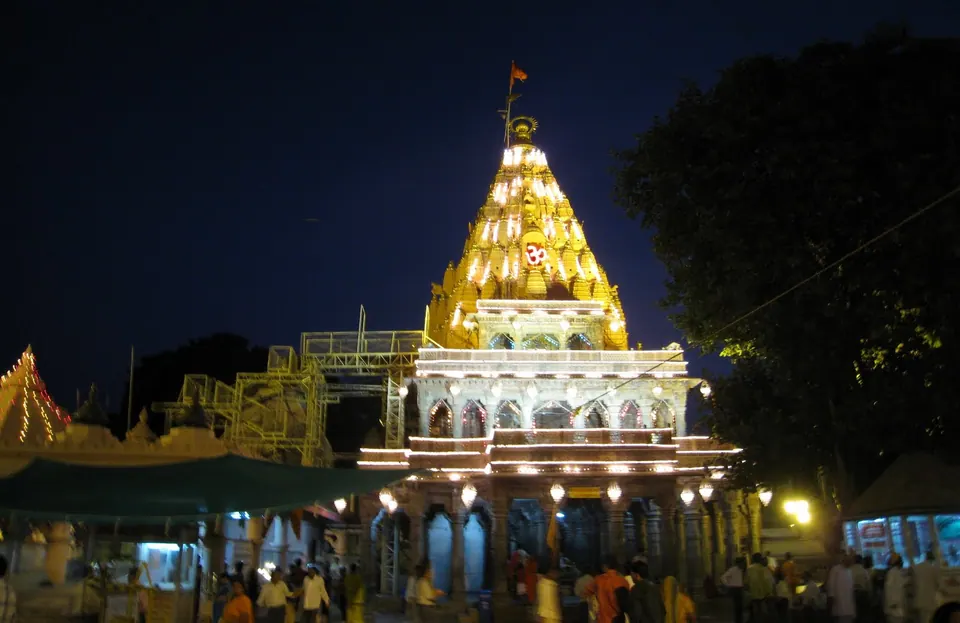
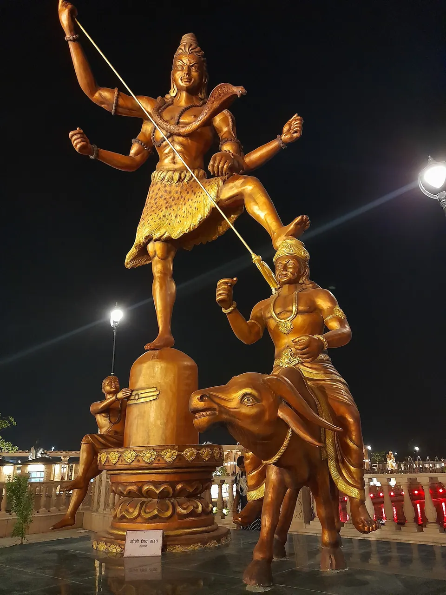
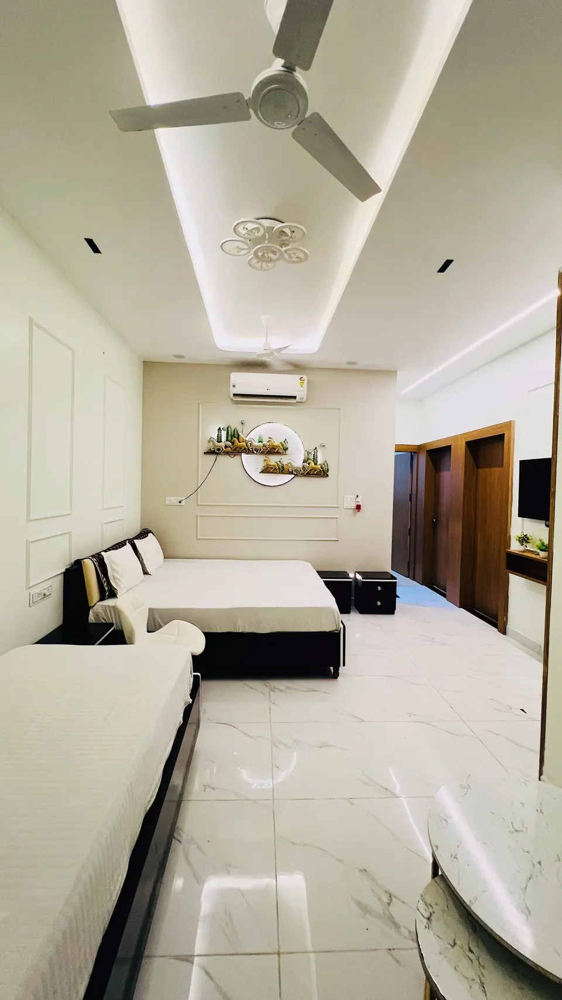
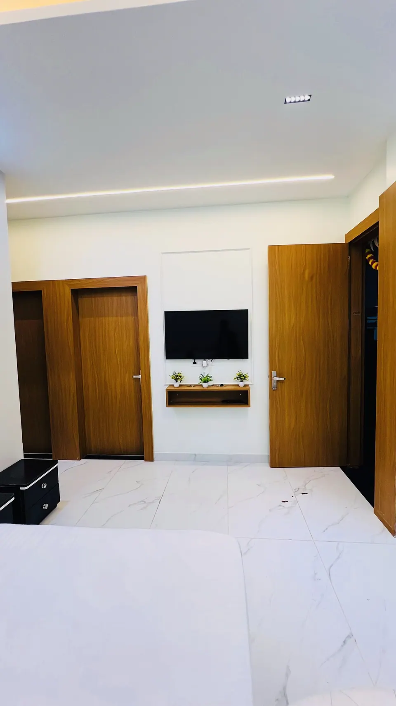
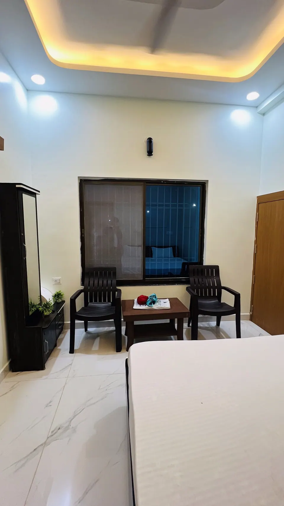

Mahakal Bhasm Aarti: What the Live Experience Is Really Like

Mahakal Bhasm Aarti is the first aarti of the day at Mahakaleshwar, Ujjain, which begins at 4 AM, when the Jyotirlinga is anointed with sacred ash and worshipped with lamps, bells and chants of "Har Har Mahadev". You need a pre-booked permit, a traditional dress, and a willingness to wake in the middle of the night.
This guide is about the experience itself: what you will see, in what order, and how to prepare your parents and children to enjoy it. It is not a booking manual; for that, please read our step-by-step guide to booking Bhasma Aarti. Our shuttle drops guests at the temple gate by 3:30 AM, and we share what helps.
What Bhasm Aarti is, and why it is special
"Bhasm" (also spelt "Bhasma") means sacred ash, associated with Lord Shiva as the one who is beyond birth and death. According to MP Tourism, the ritual begins every day at 4 AM. Mahakaleshwar is one of the twelve Jyotirlingas, and this early aarti is the one most devotees dream of attending.
It is also a quiet lesson. The ash reminds us that everything in this world passes, and that devotion is what remains. You do not need to know every mantra to feel that.
What happens during the aarti, step by step
No source we found gives one complete, official order of service, so we describe only what MP Tourism and Ujjain Darshan report. The temple's priests may vary details by day and season.
1. The Jyotirlinga is bathed and decorated
MP Tourism says the linga is given a ritual bath and coated with curd, honey and sandal paste, then cleaned with milk and water. It is decorated with flowers and bel leaves, which are dear to Lord Shiva. The page says this adornment, which shapes the linga into a face-like form with garlands, takes about an hour.
2. The offering of ash
The same page says the head priest swings an ash-filled pouch over the linga, filling the sanctum with ash for about a minute, and the linga is covered with a cloth so the decoration stays intact. On the ash itself, MP Tourism notes that in the past it came from a funeral pyre, and that today fresh ash is made from cow dung. You may read different versions online, so we simply report what the tourism board says.
Ujjain Darshan adds a rule that surprises many families: women are asked to cover their faces briefly during the ash ritual. Your pass or the volunteers will tell you when.
3. The aarti with lamps, bells and chants
MP Tourism says the ritual ends with an aarti of oil lamps and bells, with chants of "Om Namah Shivay" and "Har Har Mahadev".

Where you will stand and what you will see
MP Tourism says no one may enter the Garbhagriha (the inner sanctum) during the ash offering, and that visitors watch the process on a screen inside the temple. Seating and standing arrangements are decided by the temple and can change, so treat your pass and the instructions of the volunteers as final.
Please set your expectations kindly. You may see much of the aarti on a screen and feel the rest through sound, fragrance and the people around you. Families who go with that spirit come back happy.
Timings: when to be at the gate
The aarti begins at 4 AM, but you must be inside well before. Ujjain Darshan lists a reporting window of 1:30 AM to 2:30 AM and says gates close strictly at 2:30 AM, while other sources mention different entry times. MP Tourism simply advises arriving an hour or more early because of long queues.
Because sources differ, follow the reporting time printed on your own pass. Our winter aarti timings post also lists how the daily schedule shifts with the season.
Dress code and what to leave behind
- Men: Ujjain Darshan says an unstitched dhoti and a gamcha-style upper cloth, with the upper body bare during the water offering.
- Women: a saree or salwar suit with a dupatta.
- Phones and cameras: MP Tourism says mobiles and cameras are not allowed inside, and must be deposited in the locker room. Leave valuables at the villa.
- ID and pass: carry the ID used for booking, along with your confirmation.
Check the official portal for the latest dress and entry rules before you go.
Getting your permit
The permit is the one thing you cannot arrange on the night. Per Ujjain Darshan, online slots open about 30 days ahead at 8 AM, and a processing fee of about ₹200 per devotee is listed. Rules and fees have changed during 2026, and some pages still describe a counter queue, so use only the official portal and read our booking guide for the details.
Tips for elders, children and first-timers
Plan the night before
Eat an early, light dinner and sleep by 8 or 9 PM if you can. Lay out clothes, ID, passes and a small pouch for prasad money. In winter, keep a shawl for the walk, remembering you may need to leave footwear outside.
Be kind to young children and elders
Children need their own pass, and Ujjain Darshan says it is registered under a parent's ID. Decide beforehand whether the youngest will stay back at the villa. If an elder finds standing difficult, speak to the volunteers politely; arrangements depend on the day. Our guide for travelling with elderly parents has more ideas.
Keep the day after gentle
You will be back by the morning with the whole day ahead. Rest, have a warm breakfast, and visit the Kal Bhairav temple or the ghats later in the day. Our travel page lists transfers and local trips.
Where to stay near Mahakaleshwar for Bhasm Aarti
All five AP Villas are within 2 km of Mahakaleshwar Jyotirlinga, about 6 minutes by car or 12 minutes on foot, and in-house guests get a complimentary Mahakal shuttle (up to 5 guests per trip).



Rudrangan Suites: rest well before the 4 AM aarti
Rudrangan Suites opened in 2026 with designer finishes, premium linens and garden seating. It has 3 bedrooms and sleeps 6, from ₹5,200 per night. There is a lift, the stay is wheelchair friendly and pets are welcome, which helps when grandparents travel with you. The kitchen has an induction cooktop, microwave and mini fridge, so you can make tea before leaving at night. Check-in is 10:30 AM and check-out 9:30 AM; a later check-out can be arranged on request, subject to availability, which is handy after a short night.
For larger groups
- Divinestay: 3 bedrooms, sleeps 8, from ₹5,500 per night.
- Om Shanti Stay: 2 bedrooms, sleeps 6, from ₹4,500 per night.
Our caretaker explains the Bhasma Aarti booking process on your arrival evening, and the shuttle drops you at the temple gate by 3:30 AM for the 4 AM aarti. The help is complimentary; the temple's own permit is booked by you. Please check your pass for the reporting time, since it may be earlier. See all five on our villas page, or ask us anything on the contact page.
Frequently asked questions
What time does Mahakal Bhasm Aarti start?
MP Tourism says the aarti begins every day at 4 AM. Reporting is much earlier; Ujjain Darshan lists 1:30 AM to 2:30 AM with gates closing at 2:30 AM. Follow the time printed on your own pass, as timings can change by season and on festival days.
Can I take my phone or camera inside?
No. MP Tourism says mobiles and cameras are not allowed inside the temple and must be left in the locker room, and Ujjain Darshan says phones are prohibited in the sanctum. Plan to leave electronics at your stay and carry only ID, your pass and a little prasad money.
What should I wear for Bhasm Aarti?
Ujjain Darshan says men wear an unstitched dhoti with a gamcha-style upper cloth, and women wear a saree or salwar suit with a dupatta. MP Tourism also mentions a dhoti for men and a saree for women. Check the official portal for the latest rule.
Can women see the ash offering?
Women attend the aarti, and Ujjain Darshan says they are asked to cover their faces briefly during the ash ritual. Volunteers tell you when. The rules are set by the temple, so follow the instructions on the day.
Can AP Villas book the permit for us?
No. Our caretaker explains the booking process on your arrival evening and the shuttle drops you at the temple gate by 3:30 AM for the 4 AM aarti, but the temple's own permit is booked by the guest. We are happy to guide you on WhatsApp beforehand.
Sources
- MP Tourism: Bhasm Aarti at Mahakaleshwar and Ujjain
- Ujjain Darshan: Bhasma Aarti booking guide, dress code and entry timing
- Ujjain Darshan: Bhasma Aarti booking system (2026 update)
- Shri Mahakaleshwar temple: official portal
Timings, prices and dates change, especially on festival days. Please verify before you travel with the official temple or government site.
If you would like help planning your Bhasm Aarti night and the days around it, write to us and we will tell you honestly what is available.
— Apoorv, Founder, AP Villas & Resorts